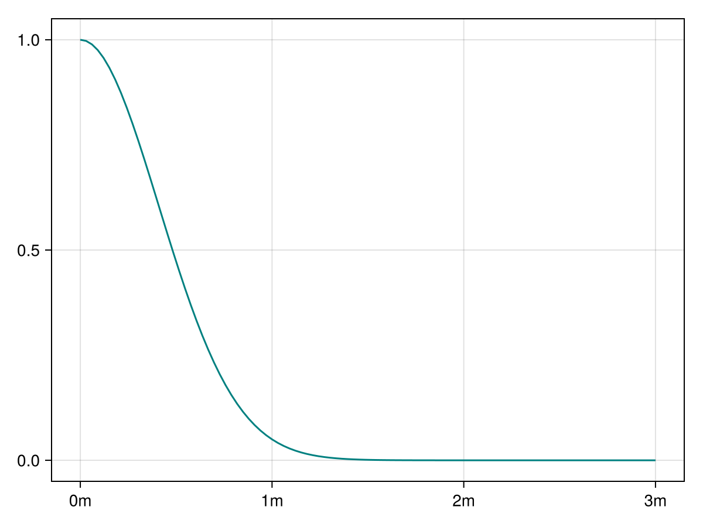
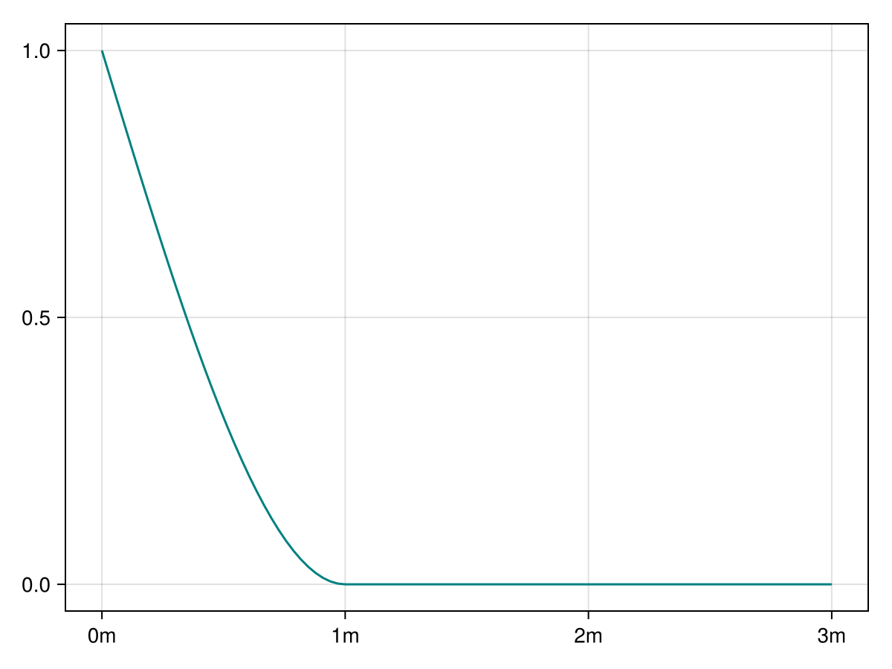
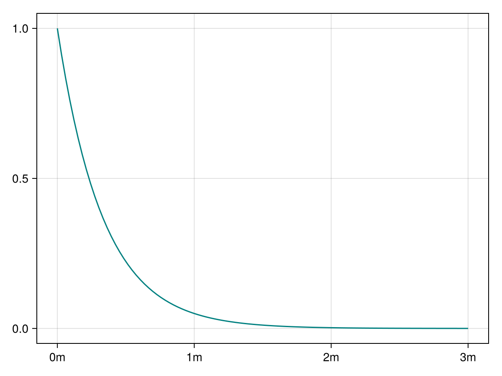
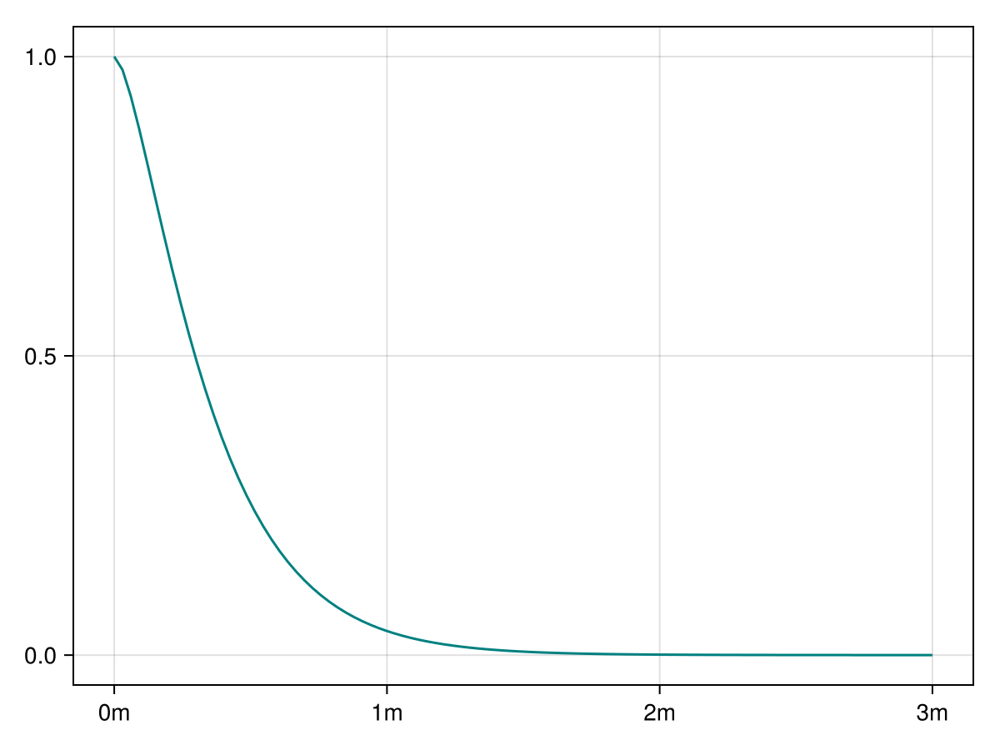
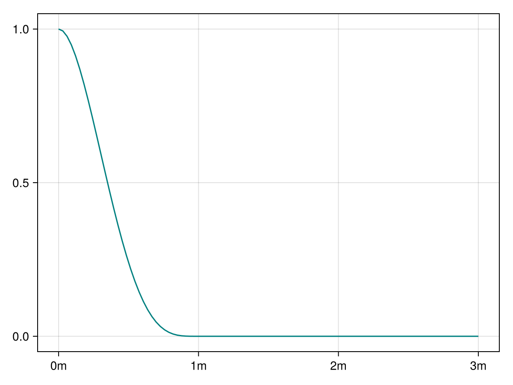
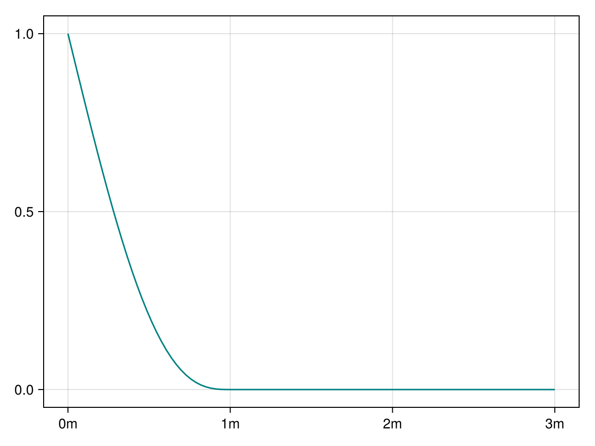
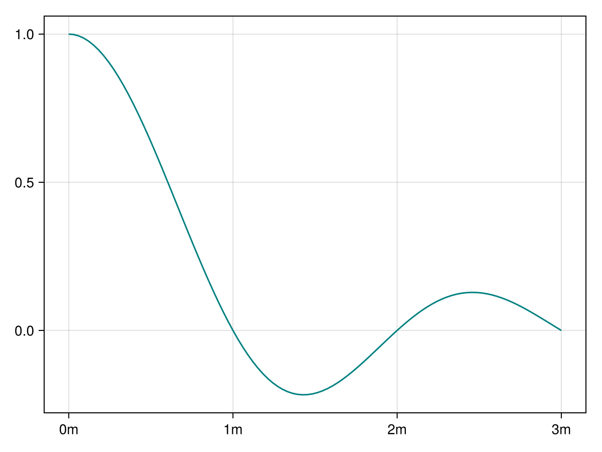
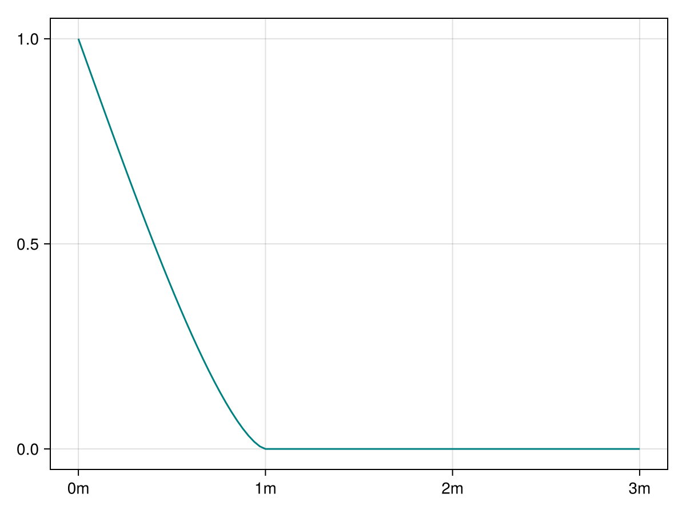

Covariances
Theoretical covariances
When variograms reach a finite sill, it is possible to work with equivalent covariance functions. These functions produce numerically stable linear systems, and are preferred by researchers in other scientific fields.
Our Kriging implementation converts variograms into covariances internally (when that is possible) to avoid numerical instabilities. This conversion is efficient thanks to the rich type system, and gives users the freedom to choose whichever function representation they prefer.
GaussianCovariance
GeoStatsFunctions.GaussianCovariance — Type
GaussianCovariance(args..., kwargs...)A covariance function derived from the corresponding variogram function.
Please see GaussianVariogram for available parameters.
funplot(GaussianCovariance())
SphericalCovariance
GeoStatsFunctions.SphericalCovariance — Type
SphericalCovariance(args..., kwargs...)A covariance function derived from the corresponding variogram function.
Please see SphericalVariogram for available parameters.
funplot(SphericalCovariance())
ExponentialCovariance
GeoStatsFunctions.ExponentialCovariance — Type
ExponentialCovariance(args..., kwargs...)A covariance function derived from the corresponding variogram function.
Please see ExponentialVariogram for available parameters.
funplot(ExponentialCovariance())
MaternCovariance
GeoStatsFunctions.MaternCovariance — Type
MaternCovariance(args..., kwargs...)A covariance function derived from the corresponding variogram function.
Please see MaternVariogram for available parameters.
funplot(MaternCovariance())
CubicCovariance
GeoStatsFunctions.CubicCovariance — Type
CubicCovariance(args..., kwargs...)A covariance function derived from the corresponding variogram function.
Please see CubicVariogram for available parameters.
funplot(CubicCovariance())
PentaSphericalCovariance
GeoStatsFunctions.PentaSphericalCovariance — Type
PentaSphericalCovariance(args..., kwargs...)A covariance function derived from the corresponding variogram function.
Please see PentaSphericalVariogram for available parameters.
funplot(PentaSphericalCovariance())
SineHoleCovariance
GeoStatsFunctions.SineHoleCovariance — Type
SineHoleCovariance(args..., kwargs...)A covariance function derived from the corresponding variogram function.
Please see SineHoleVariogram for available parameters.
funplot(SineHoleCovariance())
CircularCovariance
GeoStatsFunctions.CircularCovariance — Type
CircularCovariance(args..., kwargs...)A covariance function derived from the corresponding variogram function.
Please see CircularVariogram for available parameters.
funplot(CircularCovariance())